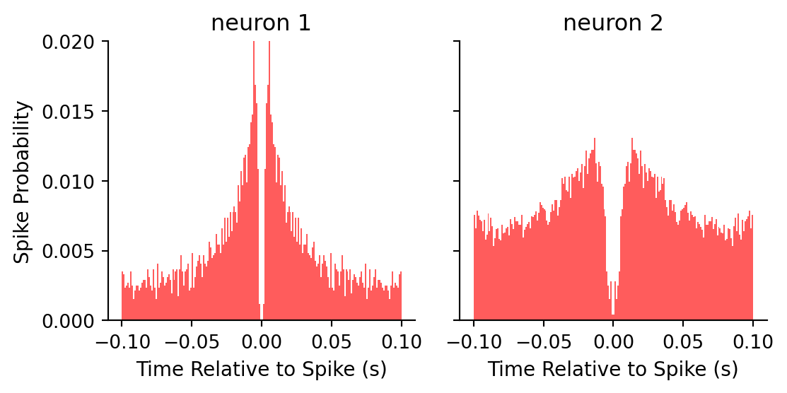
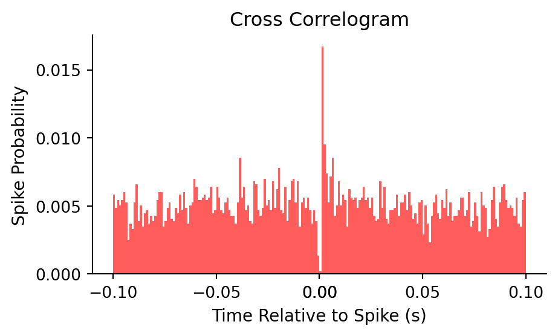

# Import packages
import matplotlib.pyplot as plt
import pandas as pd
import numpy as np
import scipy.io
import os; os.chdir("/mnt/arrakis/courses/bmes477/lab5")BMES 710: Lab 5 - Autocorrelograms and Cross-Correlograms
Problem 1 - Autocorrelations
Dataset organization:
- the file
Correlations.matcontains 2 variables called neuron1 and neuron2. - one of the neurons is a pyramidal cell from the hippocampus, and the other is an interneuron.
- One of your tasks will be to determine which is which.
- One of your tasks will be to determine which is which.
- These variables each represent a sequence of times where spikes occurred for each neuron.
- The units are in seconds.
- The total length of the recording is 1 hour (3600 seconds).
- In the journal article by Csicsvari et al., the first section of the results “Physiological Identification of Pyramidal Cells and Interneurons” will give you some important differences between these two cell types. Pay special attention to the auto-correlograms in figure 1. You don’t have to read the entire paper, but if you’re lost it might give you some insight.
Autocorrelogram algorithm
This is actually the same algorithm as the PSTH (from your last homework), except that here your reference events are the same as the target events. In other words, you want to build a histogram of the spike times for a neuron, referenced to each individual spike from that neuron.
- Take the first spike from one neuron as the reference point.
- Count all other spikes from the same neuron in bins 100 ms before and 100 ms after the reference event, using a bin size of 1 ms.
- Repeat using the next spike from that neuron as the reference
- Be sure not to count the reference spike in your histogram. This is a problem specific to auto-correlograms. You can either choose not to take the reference spike in each iteration, or just subtract the total number of spikes from the center bin before normalization.
- As for the PSTH algorithm, make sure to normalize by dividing by the total number of spikes emitted by the neuron. This will give you a probability unit of measure.
- Specify the units of measure on each axis.
1. Autocorrelograms
# Define Histogram Parameters
BIN_SIZE = 0.001 # 1 ms
X_MIN = -0.1 # -100 ms
X_MAX = 0.1 # 100 ms
# Calculate the edges of the bins
EDGES = np.arange(X_MIN, X_MAX + BIN_SIZE, BIN_SIZE)
CENTERS = (EDGES[:-1] + EDGES[1:]) / 2- Calculate average firing rate for these two neurons separately (number of spikes divided by the total time of recording, 1 hour. Final unit: spikes/s)
def firingrate(ts):
"""Calculate firing rate for a neuron
Args:
ts (np.ndarray): Spike times for a neuron (s)
Return:
rate (float): Firing rate (spikes/s)
"""
return len(ts) / (ts[-1] - ts[0])
# Load spike times
data = scipy.io.loadmat('Correlations.mat')
neuron1 = data['neuron1'][:, 0]
neuron2 = data['neuron2'][:, 0]
# Compute firing rates
for i, n in enumerate([neuron1, neuron2], 1):
print(f"Firing rate for neuron {i}: {firingrate(n):.2f} spikes/s")Firing rate for neuron 1: 1.43 spikes/s
Firing rate for neuron 2: 4.61 spikes/s- Generate auto-correlograms for the two neurons in the data set (-100 ms to 100 ms; 1 ms bin size)
def autocorrelogram(ts):
"""Generate an autocorrelogram
Args:
ts (np.ndarray): Spike times for a neuron (s)
Return:
probs (np.ndarray): the probability of spikes in each bin.
"""
global EDGES
counts = np.zeros(len(EDGES) - 1, dtype=int)
for i, k in enumerate(ts):
d = np.delete(ts, i) - k
c, _ = np.histogram(d, bins=EDGES)
counts += c
return counts / ts.shape[0]
def plot_ac(ac_data):
"""Plot autocorrelograms for each neuron
Args:
ac_data (pd.DataFrame): Dataframe containing autocorrelograms
"""
fig, axes = plt.subplots(1, 2, figsize=(6, 3))
for ax, row in zip(axes, ac_data.iterrows()):
neuron, probs = row[1]
ax.bar(CENTERS, probs, width=BIN_SIZE, align='center', color='#ff5c5c')
ax.spines[['top', 'right']].set_visible(False)
ax.set_xlabel('Time Relative to Spike (s)', fontsize=10.5)
ax.set_title(f"{neuron}")
if neuron == 'neuron 1':
ax.set_ylabel('Spike Probability', fontsize=10.5)
else:
ax.set_yticklabels([])
ax.set_ylim(0, 0.02)
plt.tight_layout()
# Compute autocorrelogram probabilities
ac_data = []
for i, n in enumerate([neuron1, neuron2], 1):
ac_data.append({
'neuron': f'neuron {i}',
'ac_probs': autocorrelogram(n)
})
ac_data = pd.DataFrame(ac_data)
# Plot autocorrelograms
plot_ac(ac_data)
- One of these neurons is a pyramidal cell and the other is an interneuron. Based on these measures and what you’ve read about the differences between cell types, which of these is more likely to be a pyramidal cell and which is more likely to be an interneuron? Please support your answer with at least two reasons from the data.
Neuron 1 has a lower firing rate of 1.43 spikes/s. Its autocorrelogram shows a more tightly clustered series of spikes around the center bin, with a rapid fall-off which suggests a tendency for bursting activity. This is characteristic of pyramidal cells.
Neuron 2 has a higher firing rate of 4.61 spikes/s. Its autocorrelogram is more spread-out with less defined peaks and a slower fal-off, indicating more regular spiking activity over time. This would suggest neuron 2 is more likely an interneuron.
Problem 2 - Cross-correlograms
Dataset
Use the data set from problem 1.
Cross-correlogram algorithm
This is actually the same algorithm as the PSTH, except that here your reference events are spikes from one of the neurons. In other words, you want to build a histogram of the spike times for one neuron, referenced to each individual spike from the other neuron. 1. Take the first spike from one neuron as the reference point. It actually doesn’t matter which neuron you choose as a reference, as long as you stay consistent. 2. Count all other spikes from the other neuron in bins 100 ms before and 100 ms after the reference event, using a bin size of 1 ms. 3. Repeat using the next spike from the first neuron as the reference. 4. As for the PSTH algorithm, make sure to normalize by dividing by the total number of spikes emitted by the reference neuron. This will give you a probability unit of measure. 5. Make sure you specify which neuron you used as the reference and specify the units of measures on each axis.
2. Cross-correlograms
- Generate the cross-correlogram between these two neurons in the data set (-100 ms to 100 ms; 1 ms bin size)
def crosscorrelogram(ts1, ts2):
"""Plot cross correlogram between two neurons
Args:
ts1 (np.ndarray): Spike times for neuron 1 (s) (reference)
ts2 (np.ndarray): Spike times for neuron 2 (s)
"""
global EDGES
counts = np.zeros(len(EDGES) - 1, dtype=int)
for i, k in enumerate(ts1):
d = ts2 - k
c, _ = np.histogram(d, bins=EDGES)
counts += c
probs = counts / ts1.shape[0]
# plot cross correlogram
fig, ax = plt.subplots(figsize=(5, 3))
ax.bar(CENTERS, probs, width=BIN_SIZE, align='center', color='#ff5c5c')
ax.spines[['top', 'right']].set_visible(False)
ax.set_xlabel('Time Relative to Spike (s)', fontsize=10.5)
ax.set_ylabel('Spike Probability', fontsize=10.5)
ax.set_title('Cross Correlogram')
ax.set_xticks([-0.1, -0.05, 0, 0.05, 0.1, 0])
plt.tight_layout()
return probs
# Plot cross correlogram
probs = crosscorrelogram(neuron1, neuron2)
- Now concentrate on the center of the cross-correlogram (-5 ms to 5 ms). Are any of these bins above or below the expected value? Hint: Combine the first 50 ms and the last 50 ms from the cross-correlogram. This data is far enough away from the reference that we can reasonably assume the probabilities are independent of the reference events. You can use this part of the data to extract the mean of the probability.
# extract center bins
center_bins = np.where((CENTERS >= -0.005) & (CENTERS <= 0.005))[0]
center_probs = probs[center_bins]
# calculate expected value
expected = np.concatenate((probs[:50], probs[-50:]), axis=0).mean()
print(f"Expected value: {expected:.4f}")
# bins above and below expected value
above = np.where(center_probs > expected)[0]
below = np.where(center_probs < expected)[0]
print(f"{len(above)} center bins above expected value")
print(f"{len(below)} center bins below expected value")Expected value: 0.0048
4 center bins above expected value
6 center bins below expected value- Are any of these bins statistically significant? Find the standard deviation from the first and last 50 ms of the cross-correlogram and use the mean +/- 3*SD as thresholds for significance.
# calculate standard deviation
std = np.concatenate((probs[:50], probs[-50:]), axis=0).std()
# calculate thresholds
thr = (expected - 3 * std, expected + 3 * std)
# significant bins
sig = center_probs[(center_probs < thr[0]) | (center_probs > thr[1])]
print(f"There are {len(sig)} significant bins with probabilities of {sig.round(4)}.")There are 4 significant bins with probabilities of [0.0014 0.0002 0.0167 0.0095].- What is the lag time between the highest bin and the reference event?
# lag time
lag = CENTERS[center_bins][center_probs == center_probs.max()][0] * 1000
print(f"The lag time between the highest bin and the reference event is {lag:.2f} ms.")The lag time between the highest bin and the reference event is 1.50 ms.- Based on your conclusions about cell type from part 1 and this cross-correlogram, can you make any conclusions about the relationship between these two cells? Do they tend to fire at the same time or not? Does one tend to fire before or after the other? If so, which one? Can you speculate about what this could mean in an anatomical sense?
The cross correlogram shows a prominent, statistically significant spike at 1.5ms after the spike in neuron 1 (pyramidal). Since neuron 2 (interneuron) consistently fires after a fixed time interval following neuron 1’s spikes, it suggests that there may be a dirrect or indirect synaptic connection where neuron 1 excites or facilitates neuron 2, causing it to fire after neuron 1.